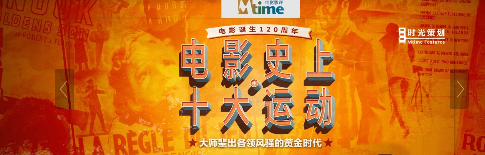
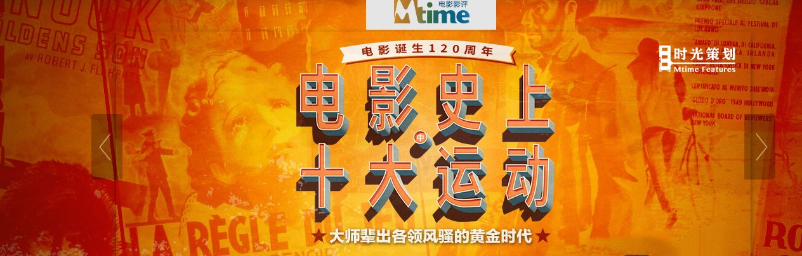
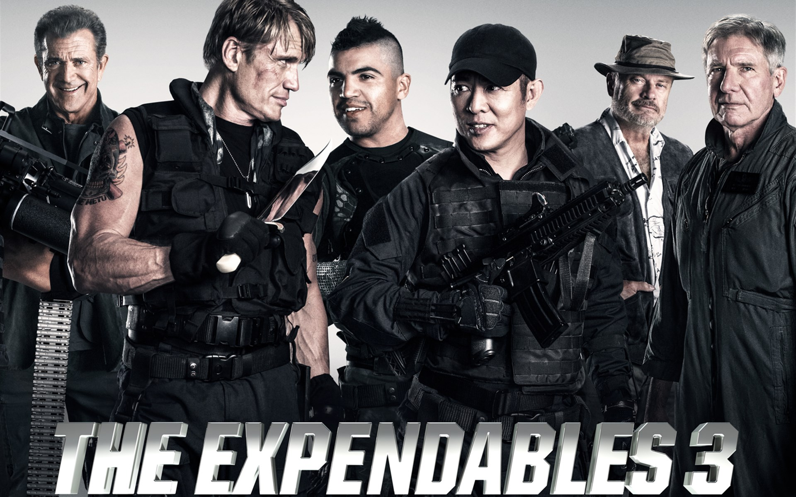
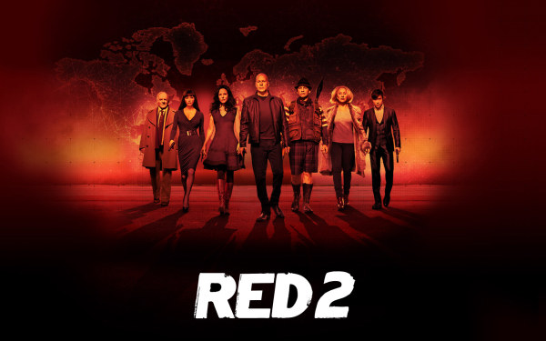

电影影评网

电影影评网

今天看了全天唯一一场原声的《敢死队》。有好事者统计，这群肌肉大叔的年龄加起来是439岁，平均年龄超过了50岁， 其中岁数最大的史泰龙64岁，岁数最小的杰森-斯坦森也有38岁，堪称老男人团。一帮纯爷们拍出的电影，当然是没有什么剧情， 从头劲爆到尾。旁边有个陌生的软妹睡死过去。全场的男性都异常亢奋。廉颇老矣，尚能饭否。当然是宝刀未老了。史泰龙全程曾哥 的......
这部电影的最大意义在于一群廉颇老矣的明星向观众做了一个集体性的道别。他们以后或许还会各自占地奋斗在荧屏之上， 但如此集中的出现在一部电影中就显得几乎不再可能。布鲁思-威利斯已经56岁。
